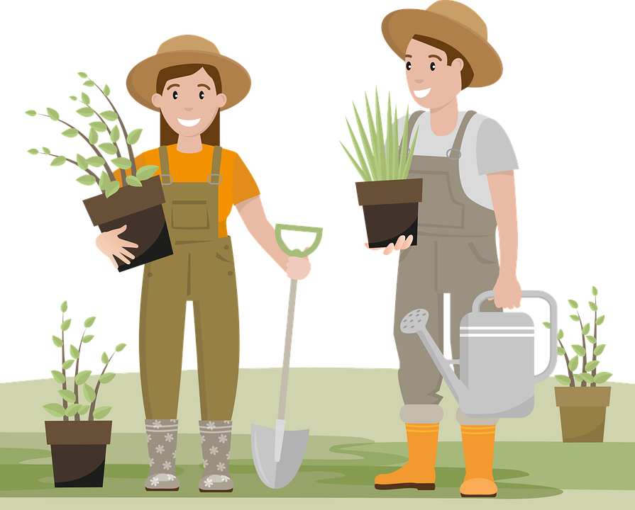

Why Garden at Home?
Gardening at home can benefit your health, community, and quality of life. Having accessible groceries at your fingertips can lead to more healthier food options and lead to you being outside more to plant and harvest Another things planting your own food saves you from is pesticides and harmful chemicals put into crops harvested by grocery stores. Leaving these harfum chemicals out of your diet can lead to a better gut health and feeling less tired as you are getting all the nutrition you are missing out on when buying from the supermarket.
Gardening Can Be Fun
You can garden alone or with people who make it a fun time. Gardening is for all ages and can be done all summer if you are looking for a tame outdoor activity. Being able to go outside and work with nature can be rewarding and helps you get out and active. Doing it with people in your community can lead to new friendships and even events where you can buy or sell products you've grown.